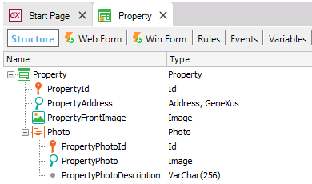
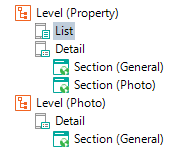
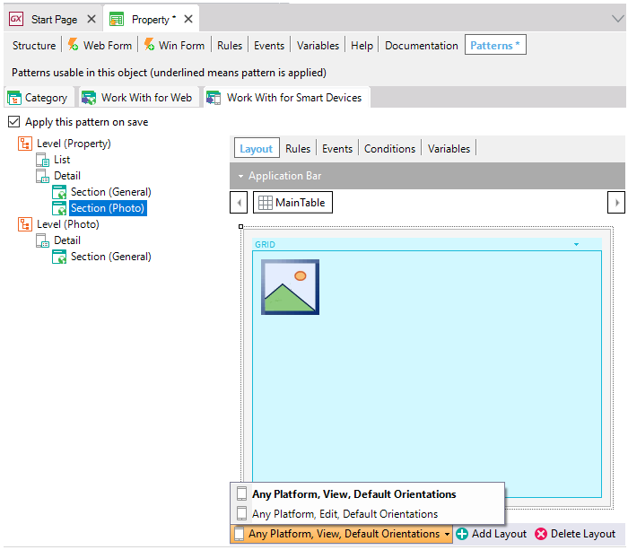

Work With for Smart Devices Pattern instance for Multi-level Transactions
When a Transaction object has more than one level, each subordinated level generates in the Work With Pattern instance an additional Section under the Detail node.
Consider the following two-level Transaction shown below:

The Work With for Smart Devices pattern analyzes the information of the Transaction, its base table and also all the subordinates (even if they are not levels of the Transaction) in which you are applying the pattern. Based on this analysis, it generates the different sections that depend on the Detail node.
Upon applying the Work With for Smart Devices Pattern, the following instances associated with the Property Transaction are generated:

As you can see, several nodes and sections are created:
List Node: which allows you to view all records.
Detail Node: is what you see when you select a record from the List Node.
Note the new Section (Photo) under the Detail node. The following options are offered:

You can see the Detail of the Photo section in View and Edit mode. The Work With for Smart Devices initializes two different layouts for an object. By default both will be initialized identical. They allow you to change the Layout used to edit or the Layout used to view a selected item (photo) from the list.
You can have Multiple Layouts for the same object, depending on the platform, the size of the screen, the orientation, and other parameters.
Tip: You can use the Display property to specify how all the sections contained in the All Sections Content control of the Detail Node will look like. In this example they allow you to select if you want to see the photo as a Link or in an Inline way.
Notes
- In this type of application, the Transaction is not used to edit data, and that is the reason for defining the additional Edit form: to perform the edition.
- If no edition of records is required and if a detailed view is not necessary, it is possible to delete the additional Level. In this case, upon clicking on a line of the Photo list of a Property, no actions will be executed.
Limitations
Insert method is not supported in multilevel Transactions.
See Also
WWSD Pattern instance for Single-level Transactions
Videos
 Container of sections in the Detail screen of the Work With
Container of sections in the Detail screen of the Work With
| Backlinks | |
| Category:Work With for Smart Devices object | WWSD Pattern instance for Related Transactions |
| WWSD Pattern instance for Single-level Transactions |